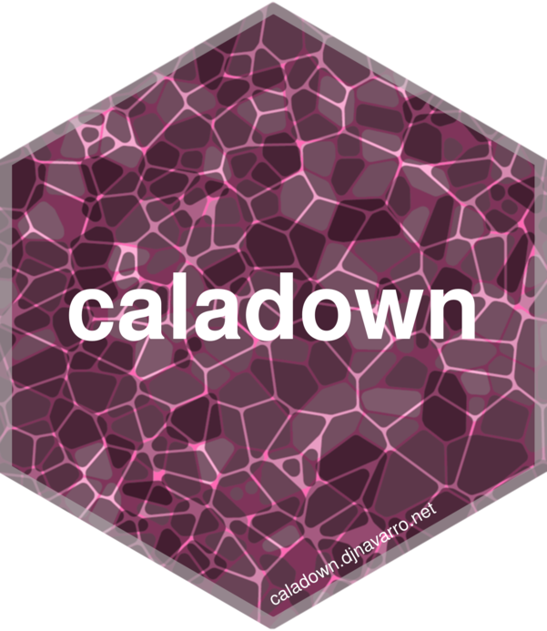

Calade
A Hugo theme and R package by Danielle Navarro

The goal of calade and caladown is to allow R users to create lightweight websites powered by Hugo and is designed to be compatible with both hugodown and blogdown, and allows users to generate graphics that match the visual style of the site via the thematic package. There are two components to caladown, a Hugo theme and an R package. The simplest way to get started is simply to download the R package from GitHub using the following command:
remotes::install_github("djnavarro/caladown")Once the caladown package is installed, the tutorial in the posts section of this site will walk you through the rest of the process. For folks who already know what they are doing, here’s the quick guide to setting up a Hugodown site on GitHub Pages:
hugodown::hugo_install("0.66.0")
caladown::create_hugodown_calade("my-caladown-site")
hugodown::hugo_build(dest = "docs")
usethis::use_git()
usethis::use_github() # then enable GH Pages with /docs folderNote that there is a known issue with knitting the R markdown files for some versions of pandoc: at present the earliest known version that works is pandoc 2.1